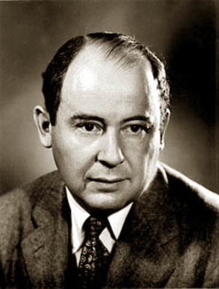

Введение

Джон фон Нейман — выдающийся ученый-универсал, чьи открытия определили развитие современных компьютеров, квантовой физики и экономики.
Джон фон Нейман сформулировал базовые принципы построения и функционирования универсальных электронно-вычислительных машин (ЭВМ), которые легли в основу современной компьютерной архитектуры.
Главные книги Джона фон Неймана посвящены вычислительной технике, теории игр и кибернетике.
Цитата
«Если люди отказываются верить в простоту математики, то это только потому, что они не понимают всю сложность жизни». источник